Final round, 10 November 2026: logo A (stretched gum), font A (Gumdrop) with tall digits, HUD layout 2 (corner tags). Mock-ups are 320 x 224 game pixels at 3x unless marked 1x; click an image for full size. Backdrops are earlier draft renders. All numbers are in numbers.txt, the reasoning in README.md.
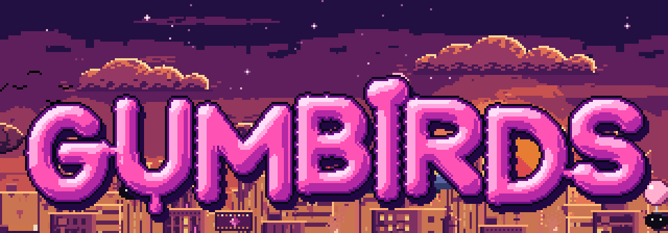
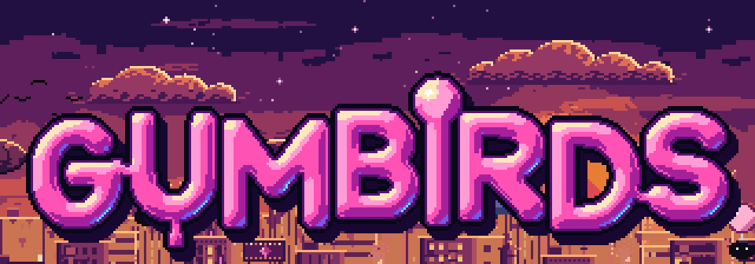
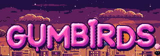
Outer gum pixels against the dusk sky, RGB distance mean 158 before, 157 after; share of edge pixels closer than 80: 4% before, 10% after. Line 2 px before, 3 px after; 10 colours in one palette.
Weak point: the still grew from 79 to 82 tiles because the line and the shadow are thicker. The measured colour distance of the outermost gum pixels did not improve; the gain is the wider dark line and the darker shadow. The warm cream highlight covers few pixels and reads as white at 1x. Over the storm sky the cool rim light is close to the sky colour, so there only the dark line separates the logo.
Final logo over the three moods, 3x and 1x:
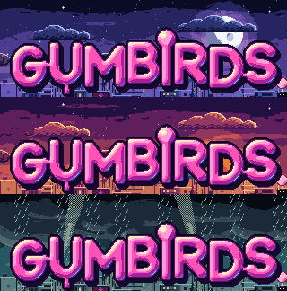
Before (draft animation) and after, every frame, 2x:
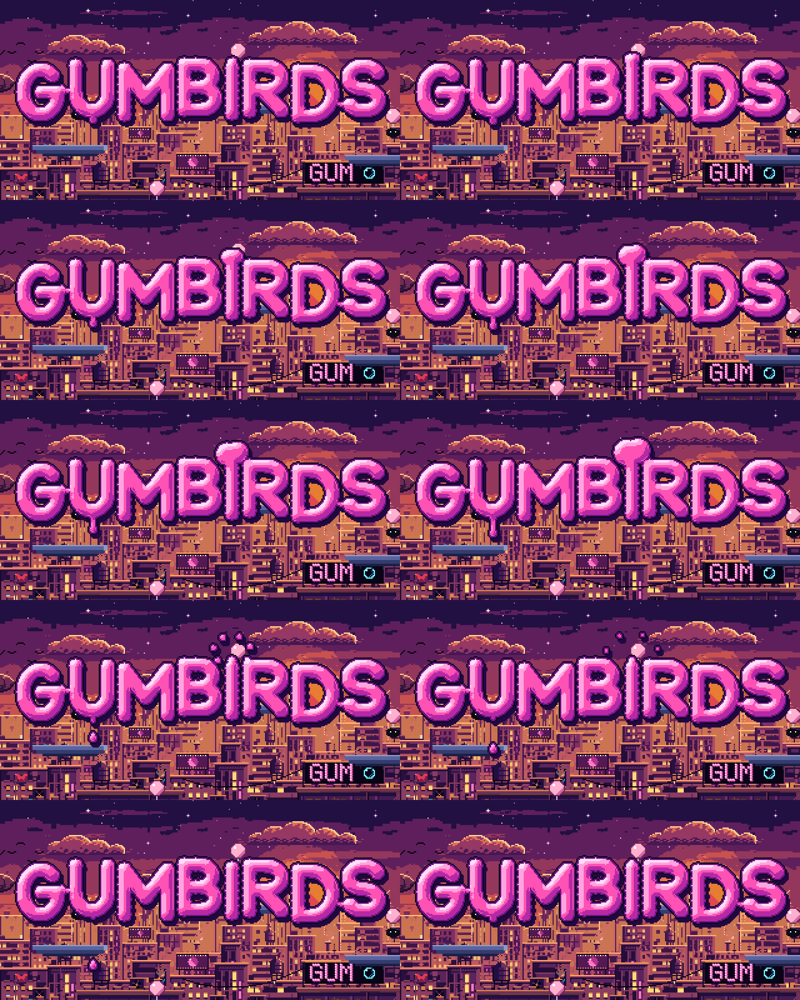
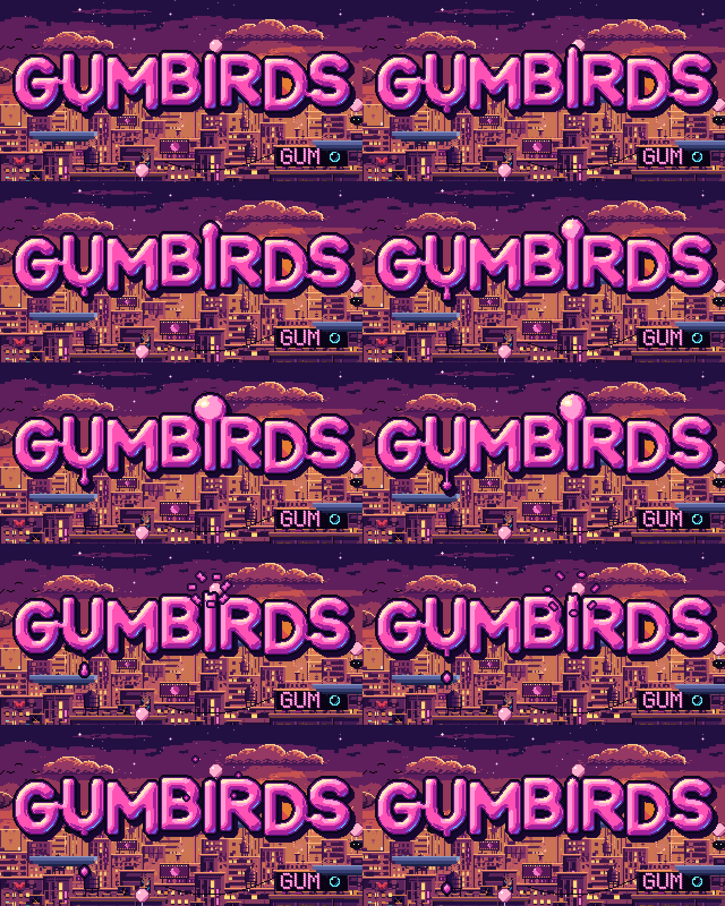
Unique 16x16 tiles: 82 still, 130 with all frames and pieces (draft: 79 and 155). 20 body strips, at most 24 sprites on a scanline.
Weak point: ten frames still step visibly, and the pop lasts only three frames. The shreds are one-tile sprites with a 1 px line and nearly vanish at 1x over the lit city windows. The tile cut is modest (155 to 130); the bubble and the drip still cost about 40 tiles on top of the still.
Import sheets at 1x: the still, the ten body frames, the free pieces (shreds and drop):
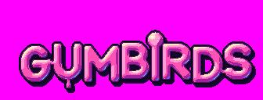
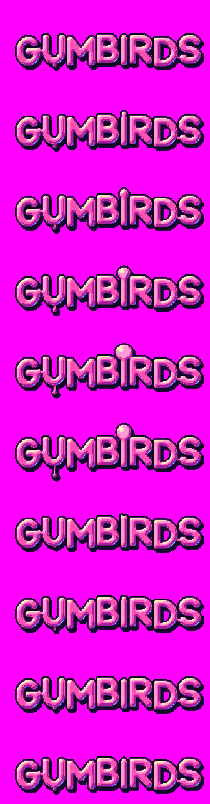
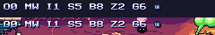
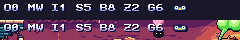
Differing pixels, before to after: O/0 3 to 14, M/W 10 to 15, I/1 5 to 11, S/5 13 to 13, B/8 3 to 13, Z/2 14 to 9, G/6 4 to 7. Closest pair left: G/O with 4. 157 fix tiles in all.
Weak point: G/O, I/T and M/N still differ by only 4 pixels (shapes unchanged; they differ in silhouette, not in pixel count). Z/2 fell from 14 to 9 because the Z gained a cross bar. The backed copies double the glyph tiles; row 27 alone needs only 26 of them.
Specimen, 3x and 1x:
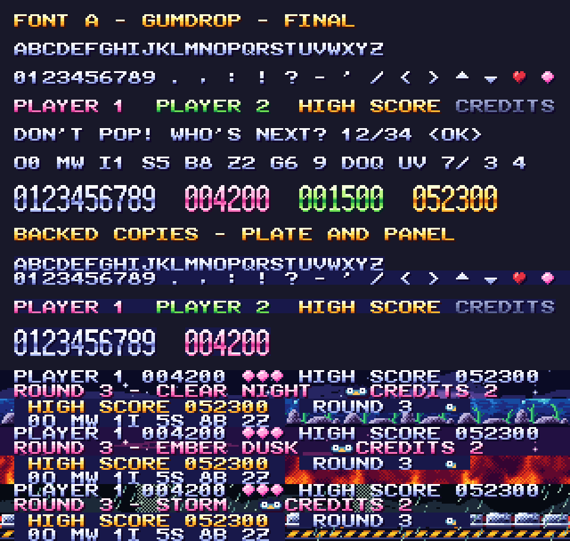
The fix tile sheet (import file), 1x and 4x. Tile order is in numbers.txt.
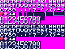
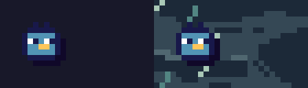
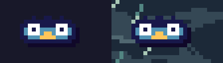
Weak point: at 1x the icon is two white eyes and an ember beak. Over a dark sky the navy outline disappears and only eyes and beak remain. It does not show the player colour.
Bottom 32 lines of the screen, every mood with every hazard kind (frame 0), 2x. Left: draft, unbacked. Right: final, plates.
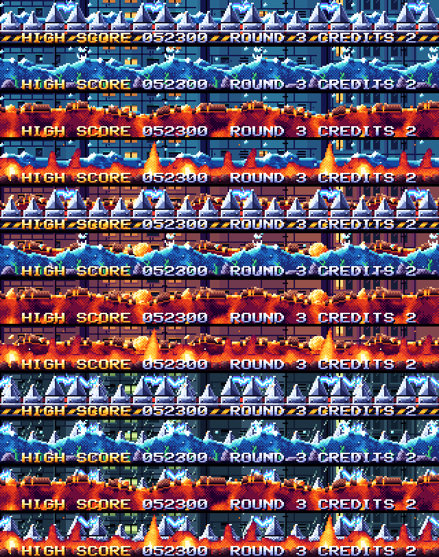
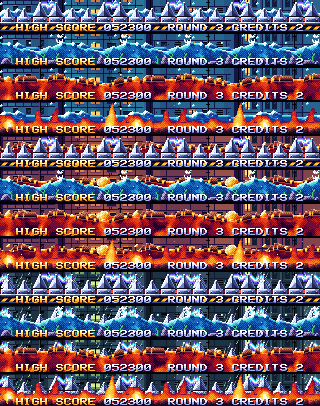
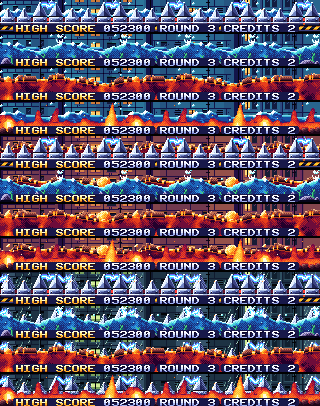
Worst row 27 cell over 192 backdrops: -5 before (dusk, fire), 182 after (dusk, fire, U (white)). Worst unbacked cell on rows 0 and 1: 39 (storm, L (pink)); 18 of 402 such cells are under 70.
Weak point: the plates hide 8 px of hazard along the bottom row, columns 1 to 37. Rows 0 and 1 stay unbacked, so the pink PLAYER 1 label over the storm sky is the weakest text on screen. Cabinet overscan for rows 0, 1 and 27 and the outer columns is not checked.
Weak point: backdrops are earlier draft renders, the results score values are placeholders, the name entry letters are only 8 px tall, and the GIFs are reduced to 255 colours.
Fix layer alone (two players), 1x:
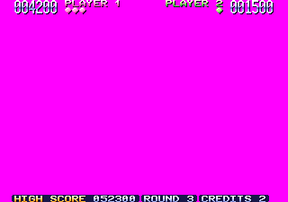